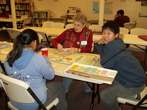

Announcements
Current Calendar
Current Soundings
Worship times
10:30 AM
Office hours
8:00 AM - noon M-F
Pastor
Mon, Tue, Thu:
9:00 AM - Noon
Wed: 3:00 - 6:00 PM
and by appointment
Fri: day off
907-747-3338

Sitka Lutheran Church
PO Box 598
224 Lincoln St
Sitka, AK 99835

GROW in Faith Formation - Children: Ages 3 through 12
Sunday School
Sunday mornings at 9:15 there are lessons for age 3 through 12 from September through May.
Vacation Bible School
A FREE week long VBS takes place every summer. This event is jointly sponsoedr by Sitka Lutheran Church, the United Methodist Church, Assembly of God, Grace Harbor, St. Peter’s Episcopal, and the First Presbyterian Church.
Glacier Bible Camp for Grades 5 through 12
Each summer the youngsters of the Lutheran churches in Southeast Alaska gather for a week of camp. learning about God’s love and forgiveness, hiking, singing, playing, games, crafts, and nightly campfires are all a part of the wonderful experience of camp.
GROW in Faith Formation - Youth: Grades 8 through 12
Sunday Mornings
Confirmed youth are invited and welcome to participate in leading worship.
Confirmation
Middle school youth are invited to attend a one year program of confirmation classes, service, and fellowship. We learn show God’s love to others through service projects. We want the youth to learn what it means to be a Christian in today’s world and invite them to continue the journey for the rest of their lives. We make faith come alive as we learn about the Lutheran faith and compare our beliefs with other world religions. Parents and adults are strongly encouraged to be involved this process.
Youth Group
Sunday afternoon the youth meet for fun and fellowship. All are invited to join in games, sledding, cook-outs, hikes, making food, singing, and anything else we can think of to fun together. This is also a safe place to talk about your emerging faith and how God fits in your life.
Regional and National Gatherings
We send our Youth to Regional and National ELCA Youth Gatherings. We are looking forward to the 2014 Western States Youth Gathering in California and the 2015 National Youth Gathering in Detroit.
GROW in Faith Formation - Adults
Sunday Lessons
Wednesday evenings at about 6:3 PM, right after Soup Supper
A discussion of the major events of the bible that will coincide with our Sunday sermon messages.
Men’s Breakfast Bible Study
Thursday mornings at 6:30 AM in the Fellowship Hall
Women's Bible Study
1st & 3rd Thursdays of the month at 12:30 PM in the Pioneer Home.
Studies are taken from the Women of the ELCA magazine, Gather.
Adult Forum
Sunday School - Sunday Mornings 9:15 AM in the church lobby
We take a look at the major articles in the current issue of The Lutheran magazine and talk through the study guide questions.
The “Other” Adult Forum
Sundays at 12:30 PM
Adults meet to discuss a theological topic of their choosing. We started with the basics of Lutheran doctrine and are moving on from there to more in-depth looks at the Lutheran point of view.
New Members Class – 4 Weeks
As the need and desire arises we will conduct new member classes. We will meet 4 to 7 times for an interesting and fun time of understanding Christianity and Lutheranism, joining a church, and SLC membership to help you on your spiritual journey.
GROW in Faith Formation - What Is a Lutheran?
Martin Luther (b. November 10, 1483, in Eisleben, Germany, d. February 18, 1546, in Eisleben) is known as the Father of Protestantism. He had studied to become a lawyer before becoming an Augustinian monk in 1505 and was ordained a priest in 1507. While continuing his studies in pursuit of a Doctor of Theology degree, he discovered significant differences between what he read in the Bible and the theology and practices of the church. On October 31, 1517, he posted a challenge on the church door at Wittenberg University to debate 95 theological issues. Luther's hope was that the church would reform its practice and preaching to be more consistent with the Word of God as contained in the Bible.
What started as an academic debate escalated to major religious disagreements fueled by fiery temperaments and violent language on all sides. As a result, there was not a reformation of the church but a separation. "Lutheran" was a name applied to Luther and his followers as an insult but adopted as a badge of honor by them instead. Lutherans still celebrate the Reformation on October 31. (See “What we believe” for more information).
Engraving of Dr. Martin Luther
from the archives of the
Evangelical Lutheran Church
in America